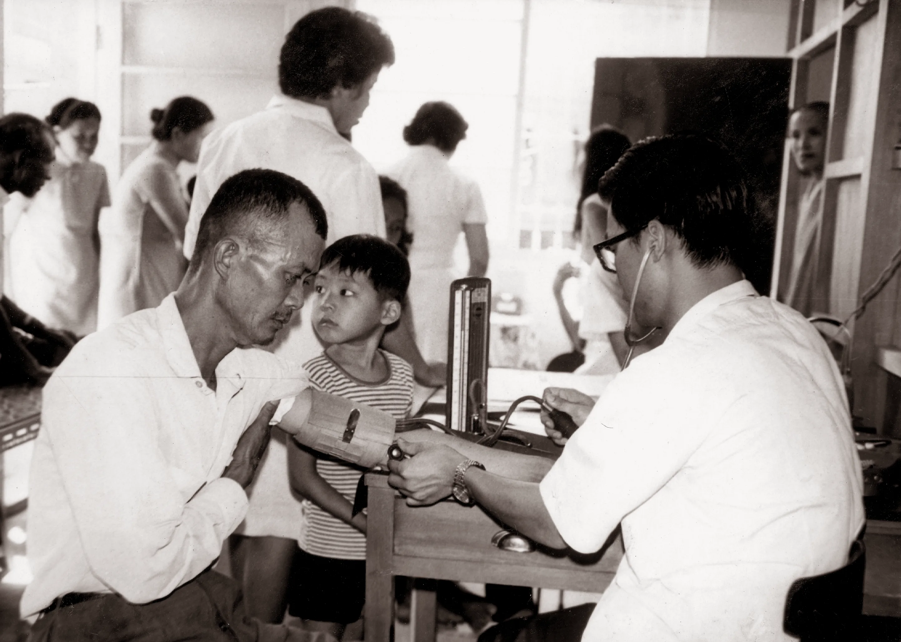
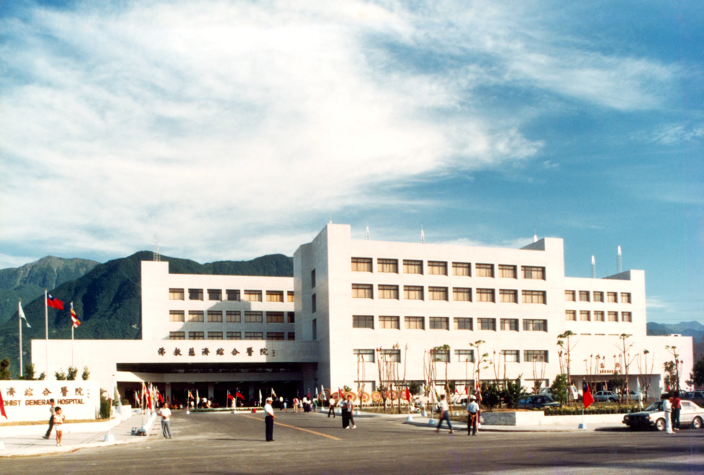
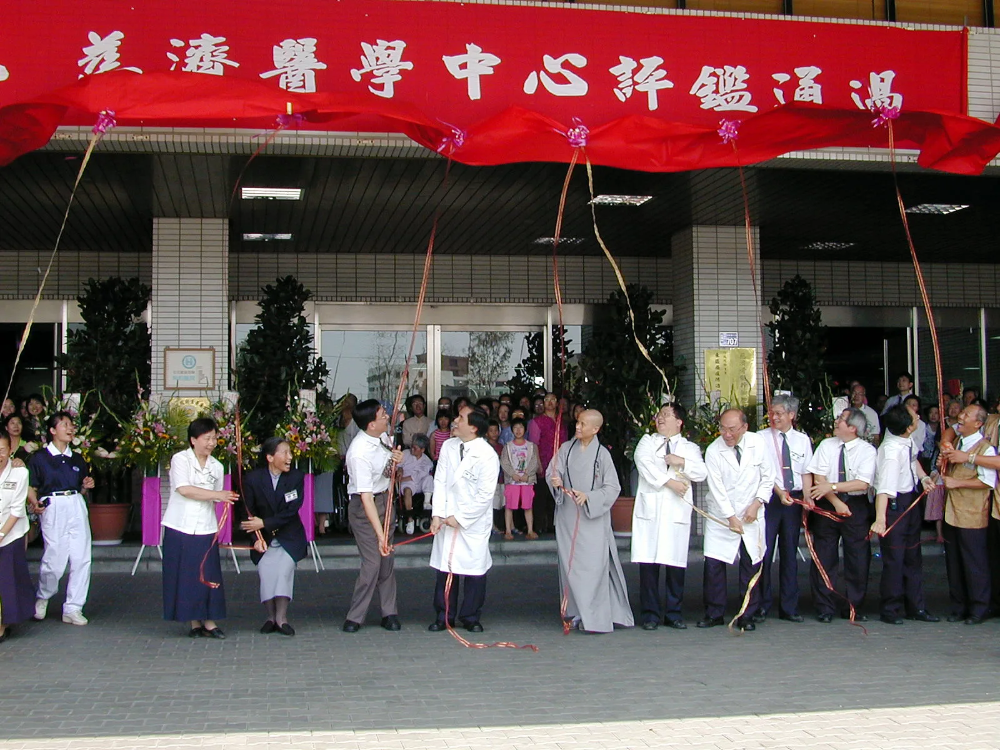
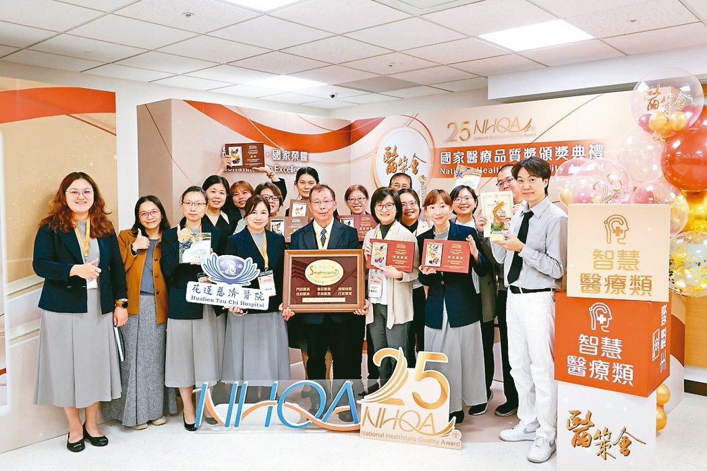
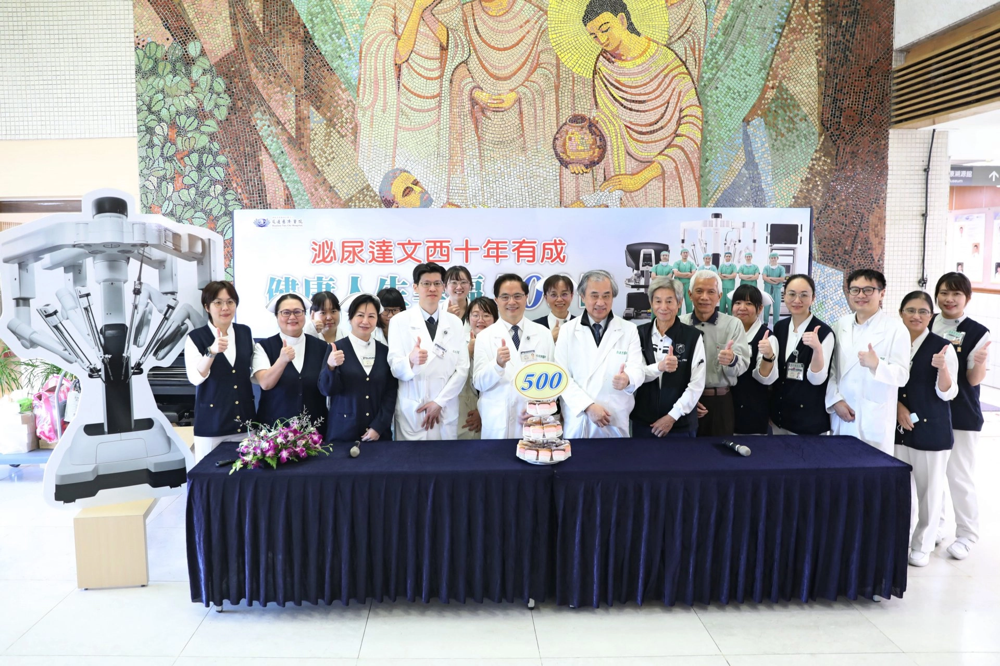
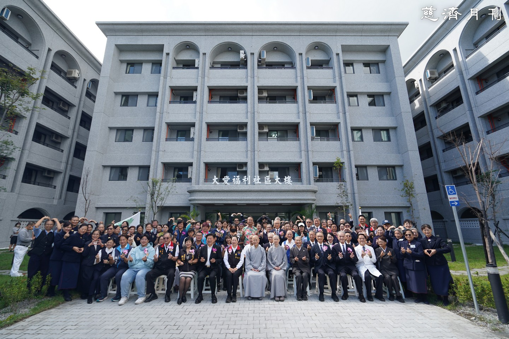

四十年大事記
Walking Through Four Decades
-
1972
成立慈濟附設貧民施醫義診所
證嚴上人帶領慈濟委員，於花蓮市仁愛街廿八號設立義診所，展開醫療志業，一周兩次為貧病者提供醫療服務，持續十五年之久。

-
1979
啟動興建綜合醫院之願景
有感於花東地區醫療資源嚴重不足，上人思索生命尊嚴應平等無異，為徹底解決東部貧困的根源，於一九七九年五月十日的慈濟委員聯誼會上宣布興建醫院構想，希望能永久延續佛教的精神慧命。
-
1983
花蓮慈濟醫院動土興建
1983年，花蓮慈濟醫院於國福里首度動土，不料隨後因國防部的「佳山計畫」軍事需求，原定院址被收回，建院計畫被迫中斷。證嚴上人與同仁重新奔走一年多，終於在花蓮農校實習農場（現址）覓得新地，並於隔年4月24日舉行第二次動土典禮，象徵篳路藍縷的醫療願景正式邁入施工階段。

-
1985
財團法人佛教慈濟綜合醫院核准成立
2月6日完成法人登記，健全行政管理體系。積極進行人才培育，並與台大醫院洽談建教合作，確保啟業後能提供與台北同步之醫療品質。

-
1986
花蓮慈濟醫院正式落成啟業
1986年8月17日，花蓮慈濟醫院在萬眾期盼下正式落成啟業。這座由證嚴上人發願、克服兩次動土波折才建成的醫療堡壘，不僅填補了當年東台灣醫療資源的匱乏，更創下台灣醫院不收「住院保證金」的先河，成為台灣人道醫療史的重要轉折點。

-
1993
慈濟骨髓捐贈資料中心成立
10月受政府委託成立，致力非親屬骨髓捐贈推廣。將「救人一命，無損己身」轉化為全民運動，使台灣成為全球華人骨髓配對之重鎮。
-
1995
器官移植小組正式成軍
加入台灣器官移植網絡，通過腎臟移植合格評鑑。透過專業團隊培訓，賦予衰竭器官病患重生機會，縮小城鄉急重症治療落差。
-
1997
成功施行首例腎臟移植手術
器官移植小組在兩次腦死判定後，成功完成東部首例腎臟移植，象徵花蓮慈院在精密外科與後備支持系統上已具備區域領先之實力。
-
2002
升格為醫學中心
通過衛生署評鑑，正式成為東台灣唯一醫學中心，承擔教學、研究與急重症後送三位一體之責，確保花東鄉親不需翻山越嶺即可獲得最優質醫療。

-
2003
完成首例屍體肝臟移植
2月8日成功為泰雅族青年進行肝移植，家屬打破族群觀念全器官捐贈，不僅救人一命，更開啟東部器官捐贈之社會風氣。
-
2003
成立創新研發中心
專注於臨床轉譯研究，重點投入惡性腦膠質瘤與幹細胞治療等先端領域，旨在將實驗室成果轉化為實際臨床救護。
-
2003
伊朗巴姆震災國際義診
12月醫療團隊於災後三天即抵達現場，開啟長達四年的後續關懷，標誌花蓮慈院正式將影響力擴散至國際人道醫療救護領域。
-
2004
南亞海嘯國際賑災義診
派遣102名醫護分五梯次前往斯里蘭卡，提供逾27,000人次醫療服務，展現於廢墟與野戰環境下的強大機動救護能力。
-
2005
引進首代達文西手術系統
投入微創手術研究與人才儲備，開啟精準微創外科新頁；同年赴巴基斯坦震災義診，展現醫療人文精神。
-
2008
四川汶川地震賑災義診
5月強震後大批醫護自費自假奔赴災區，三個月內服務45,082人次，熱食供應逾80萬份，深度整合醫療救助與社會心理支持。
-
2010
惡性腦瘤新藥 EF-001 研發突破
創新研發中心發現小分子藥物能抑制GBM腫瘤生長，完成技術移轉，開啟自研新藥邁向臨床試驗之里程碑。
-
2012
全面啟動行動醫療與電子化查房
導入平板電腦與智慧載具，整合醫療資訊系統，醫護人員可即時調閱影像與報告，大幅提升臨床決策效率與精準度。
-
2014
啟用東台灣首台達文西機器手臂
8月14日正式運作，首例為泌尿科攝護腺切除，開啟東部精準微創手術時代，減少手術出血量與住院天數，提升病患生活品質。
-
2016
建立大數據研究中心
整合多年累積之去識別化病歷，發展AI預測模型，針對肺部影像與骨齡分析導入AI輔助判讀，減少放射科負荷並降低誤診率。
-
2017
舉辦首屆慈濟醫學年會
匯集體系內八家醫院與國內外學者，成為整合醫學、護理、公共衛生與創新科技的學術平台，強化研究能量與國際能見度。
-
2018
獲核准執行特管辦法細胞治療
成為全台首批獲准執行細胞治療之機構，針對幹細胞治療脊髓損傷與退化性關節炎展開臨床應用，開啟再生醫學在東部之實踐。
-
2020
成立人工智慧醫療創新發展中心
採用全球先進AI運算系統，疫情期間開發遠距視訊診察與智慧機器人清消，落實「零接觸醫療」並大幅縮短急性心肌梗塞診斷時間。

-
2023
升格第四代達文西 Xi 手術系統
9月引進最新系統，透過雷射定位與懸吊手臂，提升婦癌與泌尿腫瘤手術之精密度，泌尿部案例累計突破500例。

-
2025
0403 震災重建—大愛福利社區落成
11月15日落成，由慈濟援建，採柱中柱耐震工法，安置受災弱勢民眾，體現醫療志業對地區災後韌性與社會安定的深層承諾。

-
2026
創院四十周年暨轉型智慧綠能醫院
計畫轉型為「全方位智慧綠能醫院」，結合物聯網管理能耗，推動AI驅動之長照生態系，目標成為全台排名前十且具國際典範之醫療中心。